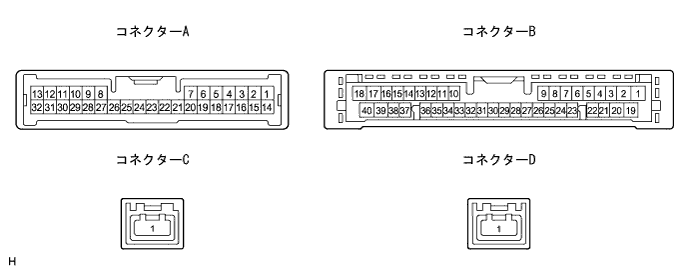
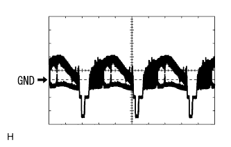

)
)Intelligent Parking Assist System Terminals of ECU |

| Terminal No. (Terminal Symbol) | Input/Output | Item | Measurement Condition | Specified Condition | Trouble symptom if out of standard O: When open circuit S: When shorted to body |
|---|---|---|---|---|---|
| A1(IG)- A4(GND1) | Input | Voltage | IG ON | 11 to 14 V | O: Intelligent parking assist system does not operate S: Fuse blown |
| A3 (HG1) - Body ground | - | Resistance | Always | Below 1 Ω |
|
| A4 (GND1) - Body ground | - | Resistance | Always | Below 1 Ω | Intelligent parking assist system does not operate |
| A6(+B)- A-4(GND1) | Input | Voltage | Always | 11 to 14 V | O: Intelligent parking assist system does not operate S: Fuse blown |
| A8(CSB3) (*1) | Output | - | - | - | [IPA System Check. Have the System Inspected by Your Dealer] is displayed |
| A9(CANH) (*2) | Input/Output | - | - | - |
|
| A10(CANL) (*2) | Input/Output | - | - | - |
|
| A11(AUO+) - A4(GND1) | Output | Waveform | Voice output in progress | A waveform synchronized with the sound is output | No intelligent parking assist guidance voice from front RH speaker |
| A14(ACC) - A4(GND1) | Input | Voltage | ACC ON | 11 to 14 V | O: Intelligent parking assist system does not operate S: Fuse blown |
| A17 (H01) - Body ground | Output | Voltage | IG ON | 0.5 to 4.5 V (varies depending on vehicle condition) | Auto leveling does not function |
| A18 (HI1) - Body ground | Input | Voltage | IG ON | 0.5 to 4.5 V (varies depending on vehicle condition) |
|
| A23 (HGND) - Body ground | - | Resistance | Always | Below 1 Ω | Auto leveling does not function |
| A24 (HB+) - Body ground | Input | Voltage | IG ON | 4.75 to 5.25V | Auto leveling does not function |
| A25 (HB1) - Body ground | Output | Voltage | IG ON | 4.75 to 5.25V |
|
| A27(CSG3) (*1) | - | - | - | - | [IPA System Check. Have the System Inspected by Your Dealer] is displayed |
| A28(LIN3) (*1) | Input/Output | - | - | - | [IPA System Check. Have the System Inspected by Your Dealer] is displayed |
| A29(AUGO) - A4(GND1) | - | Resistance | Always | Below 1 Ω | Normal (slight increase in intelligent parking assist guidance voice noise) |
| A30(AUO-) - A4(GND1) | Output | Waveform | Voice output in progress | A waveform synchronized with the sound is output | No intelligent parking assist guidance voice from front RH speaker |
| A31(TX+) | Input/Output | - | Service Inspection | - | O: Intelligent parking assist system does not operate S: HDD navigation system does not operate |
| A32(TX-) | Input/Output | - | Service Inspection | - | O: Intelligent parking assist system does not operate S: HDD navigation system does not operate |
| Terminal No. (Terminal Symbol) | Input/Output | Item | Measurement Condition | Specified Condition | Trouble symptom if out of standard O: When open circuit S: When shorted to body |
|---|---|---|---|---|---|
| B10(CV+) - A4(GND1) | Input | Waveform | IG ON, shift lever in R | Waveform 1 | No screen display |
| B11(CGND) - A4(GND1) | - | Resistance | Always | Below 1 Ω | Intelligent parking assist system screen does not appear |
| B34(CV-) - A4(GND1) | - | Resistance | Always | Below 1 Ω | No screen display |
| B35(CB+) - A4(GND1) | Output | Voltage | IG ON, shift lever in R | 5.7 to 6.5 V | O: Intelligent parking assist system screen does not appear S: Fuse blown |
) |
Waveform 1
| Item | Description |
|---|---|
| Terminal No. (Terminal Symbol) | B10(CV+) - A4(GND1) |
| Tool Setting | 0.2 V/DIV、0.2 μS/DIV |
| Measurement Condition | IG ON, shift lever in R |
ReferenceReference
| Terminal No. (Terminal Symbol) | Input/Output | Item | Measurement Condition | Specified Condition | Trouble symptom if out of standard O: When open circuit S: When shorted to body |
|---|---|---|---|---|---|
| 1(CV-) - 3(CGND) | - | Resistance | Always | Below 1 Ω | Intelligent parking assist screen not displayed |
| 2(CV+) - 3(CGND) | Output | Waveform | IG ON, shift lever in R | Waveform 2 | Intelligent parking assist screen not displayed |
| 3 (CGND) - Body ground | - | Resistance | Always | Below 1 Ω | Intelligent parking assist screen not displayed (black screen) |
| 4 (CB+) - Body ground | Input | Voltage | IG ON, shift lever in R | 5.7 to 6.5 V | O: Intelligent parking assist screen not displayed (black screen) S: Fuse blown |
Waveform 2
| Item | Description |
|---|---|
| Terminal No. (Terminal Symbol) | 2(CV+) - 3(CGND) |
| Tool Setting | 0.2 V/DIV、0.2 μS/DIV |
| Measurement Condition | IG ON, shift lever in R |